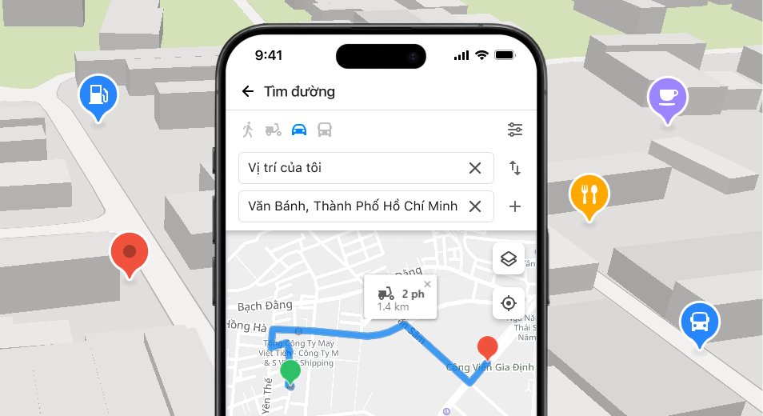

Vietbando Tracking Application

Tổng quan
Phần mềm Vietbando Tracking Application bao gồm các nhóm chức năng chính:
- Quản lý, giám sát phương tiện theo thời gian thực (hành trình, tín hiệu, tốc độ, tình trạng tắt/mở máy, dừng lâu, ngoài lộ trình...)
- Phân loại các loại phương tiện (xe buýt, xe tải, taxi, xe khách,…)
- Khai thác thông tin giám sát hành trình
- Hậu kiểm hành trình các phương tiện
- Tìm kiếm, khai thác các phương tiện theo thời gian, không gian (điểm, đường, vùng), thuộc tính (biển số, loại phương tiện) và kết hợp
- Quản lý lịch sử phương tiện di chuyển vào một vùng bất kỳ
- Xác định tình trạng giao thông theo thời gian thực, cung cấp lộ trình thay thế
- Dự báo tình hình giao thông theo thời gian
- Bản đồ nhiệt mật độ xe theo thời gian
- Kết nối và truy xuất thông tin hành trình khai thác cho các phương tiện từ Hệ thống cấp phép
- Cảnh báo hành trình các phương tiện (Cảnh báo vượt tốc độ cho phép, thời gian/lộ trình di chuyển, dừng lâu, dừng đỗ sai quy định, di chuyển ra ngoài vùng)
- Kiểm soát các phương tiện ra vào cửa ngõ thành phố/nội đô theo thời gian, biển số, hành trình
- Kiểm soát vi phạm của phương tiện: quá tốc độ, vào đường cấm, đường một chiều
- Kiểm soát các xe khách đón trả khách không đúng quy định: bến cóc xe dù
- Thống kê lưu lượng phương tiện đường bộ trên các tuyến đường theo thời gian: kẹt xe, thông thoáng, thời điểm
- Thống kê lộ trình phương tiện đường bộ
- Thống kê thông tin phương tiện đường bộ
- Thống kê hành trình khai thác của các phương tiện đường bộ
- Thống kê dừng đỗ sai quy định của các phương tiện đường bộ
- Thống kê vượt tốc độ cho phép của các phương tiện đường bộ
- Báo cáo tổng hợp trạng thái vận hành của các phương tiện đường bộ
- Báo cáo chi tiết trạng thái vận hành của các phương tiện đường bộ theo từng doanh nghiệp
- Thống kê tần suất, khối lượng dữ liệu hành trình đã nhận từ các phương tiện đường bộ